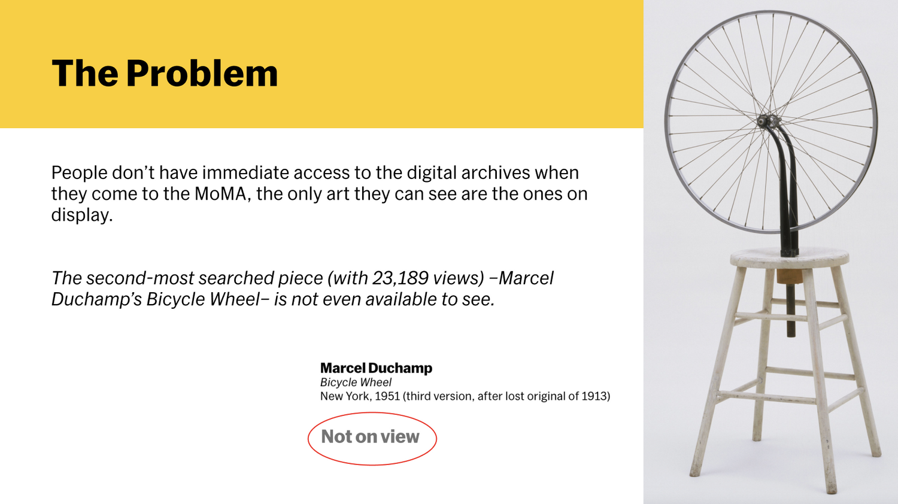
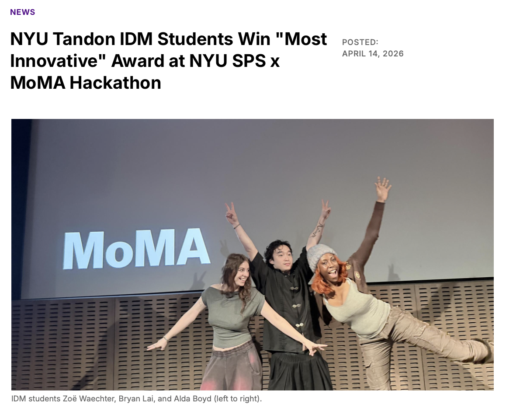
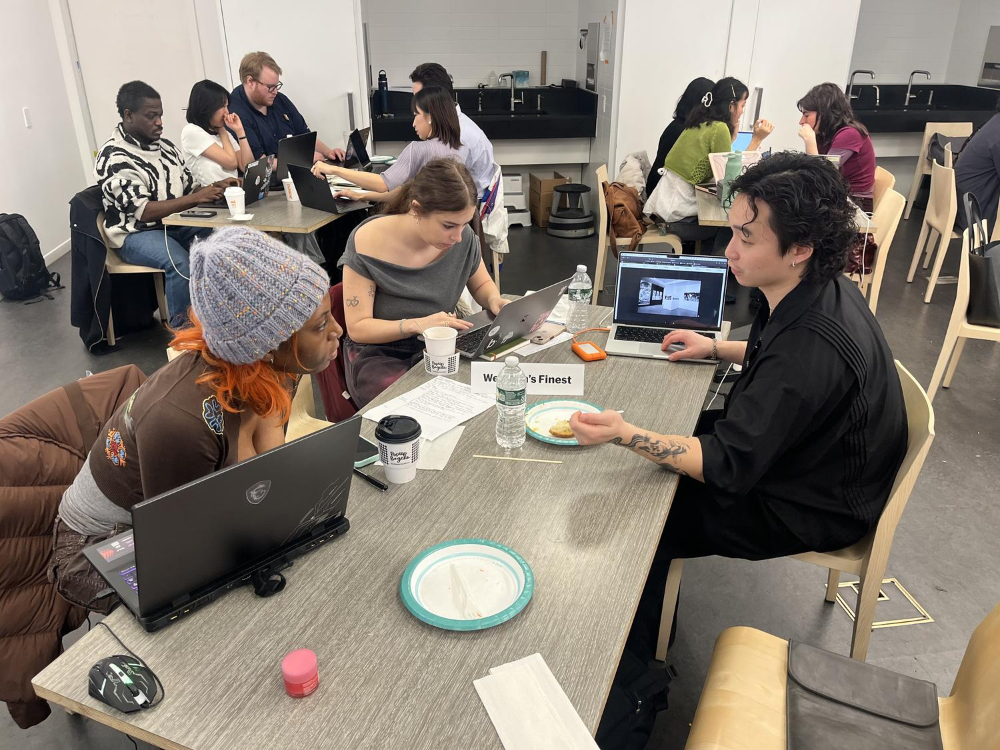
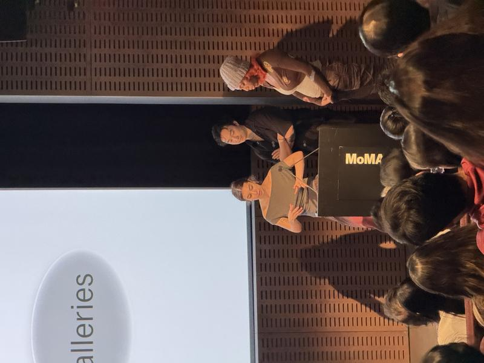
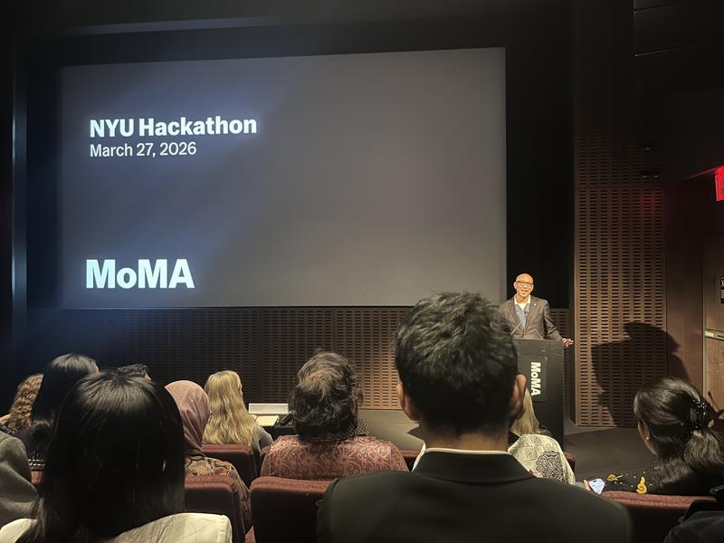
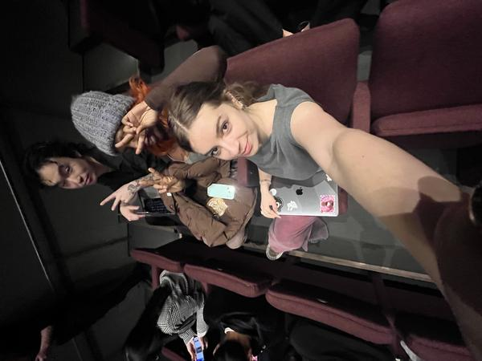
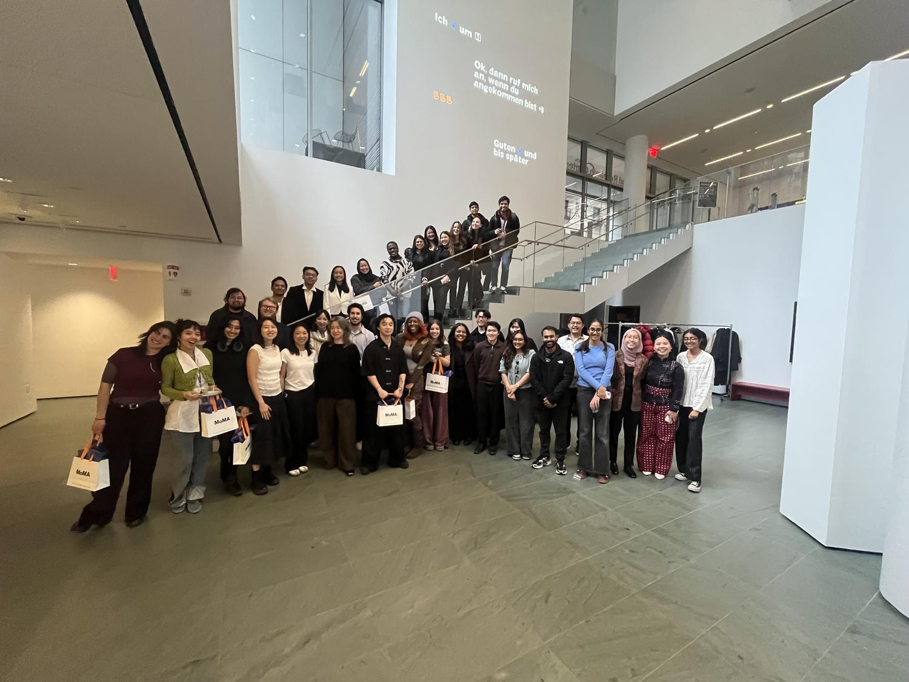

In March, 2026, I had the opportunity to participate in MoMA’s first Hackathon through NYU SPS alongside my classmates Alda Boyd and Bryan Lai. The event was centered around rethinking visitor experience and digital access, with prompts focused on how MoMA could better connect visitors to its collection both onsite and online– whether through improving navigation, creating stronger emotional connections to the work, or making exploration more accessible and personalized. MoMA framed the challenge around helping visitors discover art that resonates with them and strengthening digital access to its nearly 200,000-work collection spanning modern and contemporary art.
Our project responded to both prompts by exploring how technology could make interacting with art feel more intuitive and embodied. Using Gaussian splatting, pose detection, and TouchDesigner, we developed a system that allows visitors to navigate MoMA’s digital archive onsite through hand tracking and gesture-based interaction. Instead of engaging with the collection through a traditional screen or desktop interface, visitors could scroll, zoom, and move through artworks using physical motion—turning exploration into something spatial, immersive, and immediate.
We were especially interested in shifting the museum experience from passive viewing to active participation. By removing the barrier of a keyboard or touchscreen, the interaction became more natural and accessible, allowing visitors to feel more connected to both the artwork and the museum itself. The goal was not just digital access, but creating a more memorable and human-centered way to experience MoMA’s collection in real time.
At the end of the event, our project was awarded “Most Innovative,” which was an exciting recognition of both the concept and the collaborative process behind it. It was a really rewarding experience to work at the intersection of design, technology, and cultural spaces, and it reinforced how much I enjoy building systems that make engagement feel more interactive, intuitive, and meaningful.






